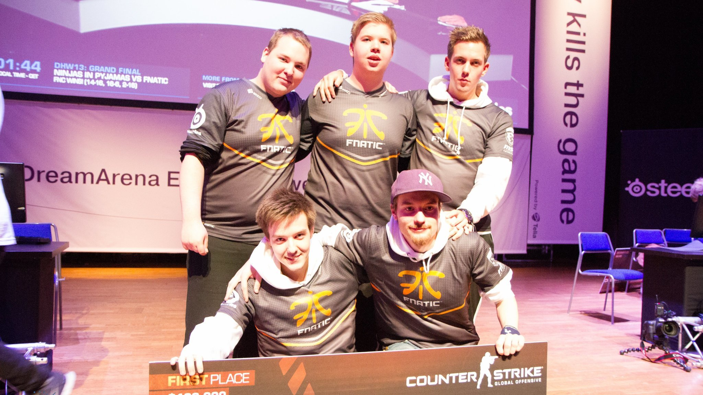
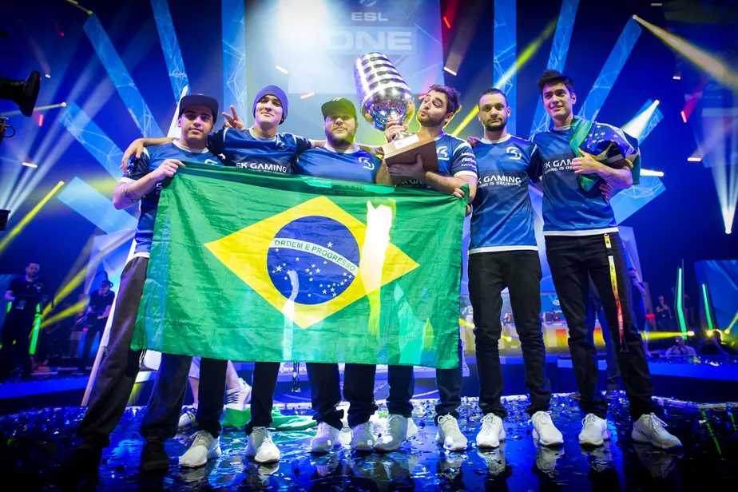
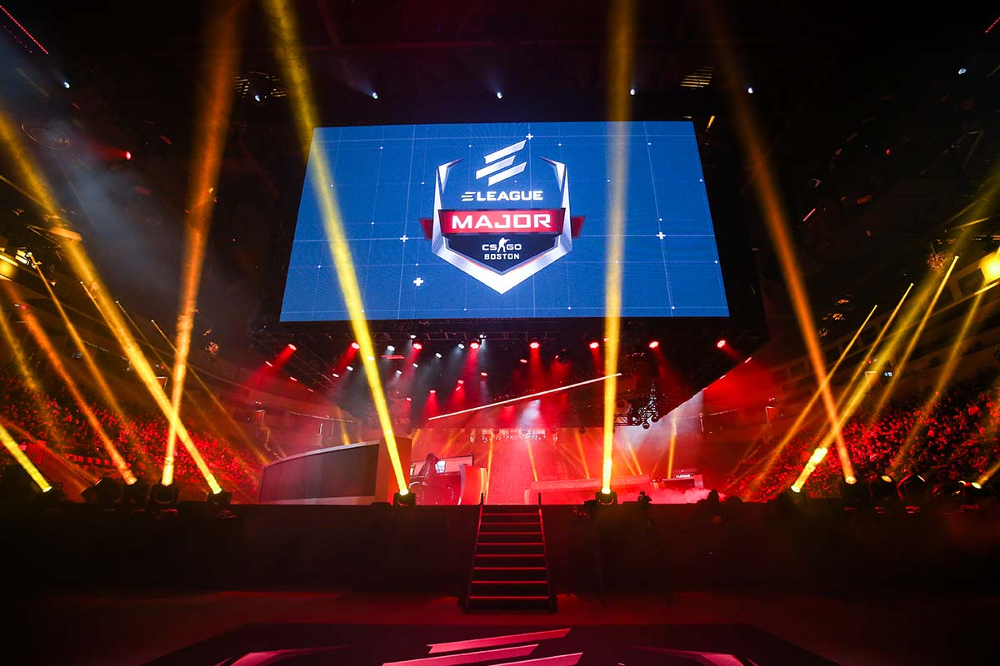

Antes da Valve estar envolvida nos torneios de Counter-Strike, os jogadores e as organizações tinham versões anteriores de Majors, que eram realizadas pelas seguintes organizações: Cyberathlete Professional League (CPL), World Cyber Games (WCG), Electronic Sports World Cup (ESWC), World eSports Masters (WEM) e Intel Extreme Masters (IEM). Todos os Majors anteriores eram da primeira versão do Counter-Strike. As equipes suecas dominaram, principalmente a SK Gaming, mas o elenco polonês conhecido como "Golden Five" foi o mais bem sucedido. Muitos outros times de outras partes do mundo iriam ganhar campeonatos, como o Team 3D dos Estados Unidos com o CPL Winter 2002 e WCG 2004, NoA da Noruega com o CPL Winter 2004, MiBR do Brasil com o ESWC 2006, e WeMade FOX da Coreia do Sul com o WEM 2010.
Em 16 de setembro de 2013, a Valve anunciou um prêmio de US$ 250 mil no seu primeiro Major, o dinheiro foi financiado através da atualização The Arms Deal, que oferecia aos jogadores itens do jogo em troca de um valor dado, e anunciou que o torneio aconteceria na Suécia e seria organizado pela DreamHack. O torneio aconteceu no final de novembro e mais tarde seria ganho pela equipe sueca da Fnatic. Após o Major de 2013, a Valve tornaria o Major um evento trienal, com os seis próximos Majors apresentando o mesmo prêmio de US$ 250 mil.
 Fnatic campeao do primeiro major de csgo 2013Em 23 de fevereiro de 2016, com o MLG Columbus 2016 a chegar, a Valve anunciou um enorme aumento no prêmio para um milhao de dolares. Entretanto, a Valve reduziria o número de Majors a cada ano de três para dois, essa eh uma epoca em que os brasileiros se lembram com carinho, pois nos dois majors realizados naquele ano, a lendaria line brasileira saia campea, na primeira vez jogando pela tag americana Luminosity, na segunda jogando pela lendaria tag alema SK, os brasileiros conquistam seu segundo major em um back to back
 SK campeao do Major MLG Columbus 2016Em 13 de dezembro de 2017, a gerente geral da ELEAGUE, anfitrião do ELEAGUE Major: Boston 2018, Christina Alejandre, anunciou um formato parcialmente novo desenhado pela Valve e pela ELEAGUE que iria expandir o número de equipes do Major de dezesseis para vinte e quatro. Este seria também o primeiro Major que aconteceria em mais de uma cidade
Depois do Major em Boston, a equipe dinamarquesa Astralis se tornou o melhor time do CS:GO e um dos melhores times da história do Counter-Strike. Com vitórias no FACEIT Major: London 2018, IEM Katowice Major 2019 e StarLadder Major: Berlin 2019, a Astralis se tornou o primeiro time a vencer três Majors consecutivos e quatro Majors no total. Depois de Berlin 2019, a Valve e a ESL anunciaram o Major seguinte, o ESL One Rio 2020, que seria o primeiro Major a ser realizado na América do Sul. O Rio 2020, inicialmente previsto para maio, foi adiado para novembro devido à pandemia de COVID-19. O Major de novembro foi anunciado com uma premiação total de US$ 2.000.000, combinando os valores que seriam reservados para ambos os Majors. Em setembro de 2020, o Major do Rio foi oficialmente cancelado devido ao COVID-19. Em dezembro de 2020, a Valve mudou o Major de 2021 de maio para outubro e novembro, citando preocupações com a pandemia. Em 14 de janeiro de 2021, a Valve anunciou que o campeonato seria realizado entre 23 de outubro e 7 de novembro em Estocolmo. Mais de dois anos após o último Major, o PGL Major Stockholm 2021 aconteceu, com a favorita Natus Vincere dominando o torneio e se tornando o primeiro time na história do CS:GO a vencer um Major sem perder um único mapa durante o torneio. O PGL Major Stockholm 2021 ultrapassou o recorde de audiência do Counter-Strike de longa data 4 vezes; alcançando 2,75 milhões de espectadores simultâneos na final. A FaZe Clan venceu o torneio seguinte, o PGL Major Antwerp 2022, tornando-se o primeiro time internacional (com todos os jogadores com diferentes nacionalidades) na história do CS:GO a vencer um Major.
 Astralis campeao do IEM KATOWICE MAJOR 2019
Astralis campeao do IEM KATOWICE MAJOR 2019